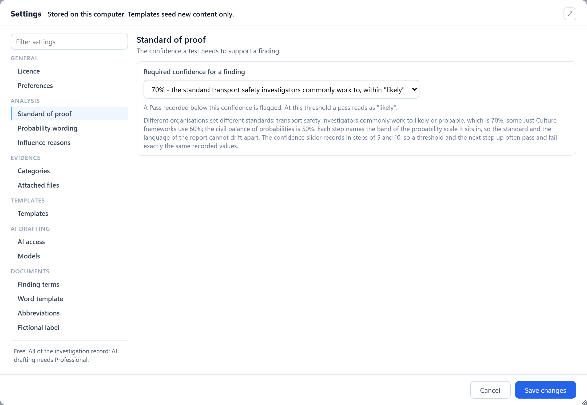

%%GS_TITLE%%
%%GS_LEDE%%
1%%GS_BEFORE_TITLE%%
Install the app, read the occurrence, check the standard of proof
Install
%%GS_INSTALL%%The standard of proof
%%GS_PROOF%%
Rather look first?
%%GS_LOOK%%
2The steps
%%GS_STEP_COUNT_WORD%% steps, each with the control, a picture and what you should see
-
%%GS_STEP_INDEX%%
-
%%GS_STEPS%%
3%%GS_HAVE_TITLE%%
%%GS_HAVE%%
A tested, evidenced factor, and the document that shows the working
4%%GS_NEXT_TITLE%%
%%GS_NEXT%%